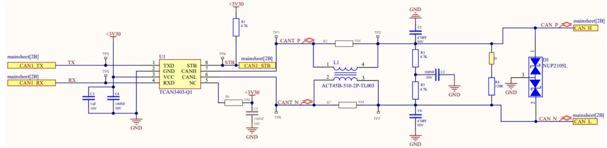
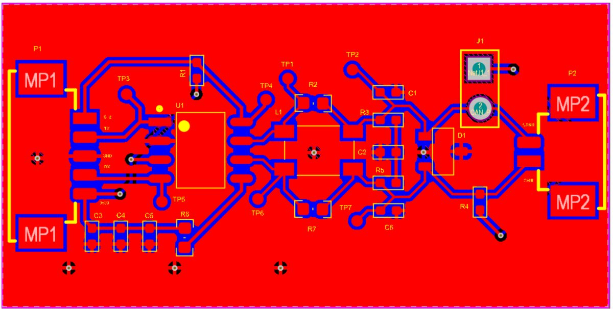

Projects / CAN PCB
CAN Data Transmission Stage for an Autonomous Shuttle
- Altium Designer
- LTspice
- Saturn PCB Design
- CAN / CAN FD
- PCB design
Overview
In an autonomous shuttle, the CAN bus lets the electronic control units exchange data between sensors, controllers and actuators. This project is the design of a robust CAN transceiver board for that data link, from the first schematic to a routed PCB.
Design
The board is built around the TCAN3403-Q1 transceiver from Texas Instruments, an automotive-grade part that supports CAN FD data rates up to 8 Mbps. Between the transceiver and the bus, the circuit includes a common-mode choke to filter noise on the CAN lines, ESD protection diodes, and a 120 ohm termination. I created the schematic symbol and the SOIC-8 footprint for the transceiver in Altium, organized the schematic in a hierarchical main sheet and transceiver sheet, added test points on the signal lines, then routed the board and reviewed it in 3D.
Schematic and layout



What I learned
This project gave me hands-on experience with the full Altium Designer flow (library creation, schematic capture, PCB layout and 3D review) and a solid understanding of the CAN physical layer. It prepared me for the larger hardware work I did later in my Mitacs internship.